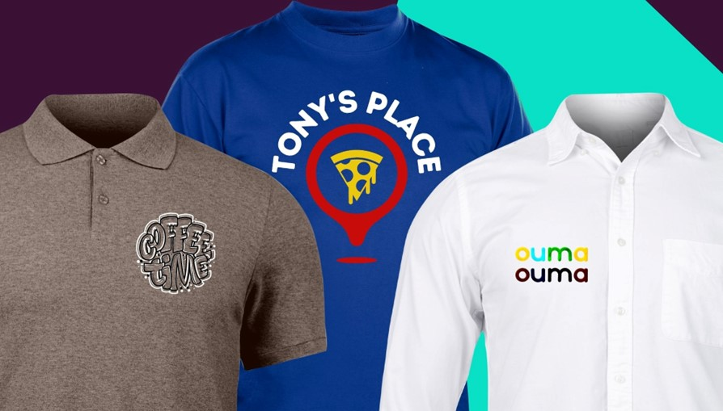

About Us
Welcome to Ink'd Impressions where we specialize in screen printing, sublimation, DTF printing, embroidery, and promotional printing services. Formally known as Nixa Screen Printing,we continue to take pride in connecting with our customers and we understand the importance of timely delivery when it comes to our customers' needs and we work hard to provide the fastest turnaround possible. Our team is dedicated to working in the shop six days a week to ensure speedy delivery, so that companies and organizations can get their names out there.
We understand that small jobs for individuals are just as important as large orders for businesses. So, whether you're a small business looking to promote your brand, an event planner looking for custom merchandise, or a non-profit organization raising funds for a cause, we've got you covered. With our dedication to quality, attention to detail, and passion for printing, we're confident that we can help you achieve your goals.
At Ink'd Impressions, we believe in building relationships with our customers and working together to create unique and customized products that meet their needs. Our goal is to make the process as easy and stress-free as possible, and we will work closely with you to ensure that your project is completed to your satisfaction.

Thank you for considering us for your printing needs. We look forward to working with you and delivering quality products with a fast turnaround time. Contact us today to get started!